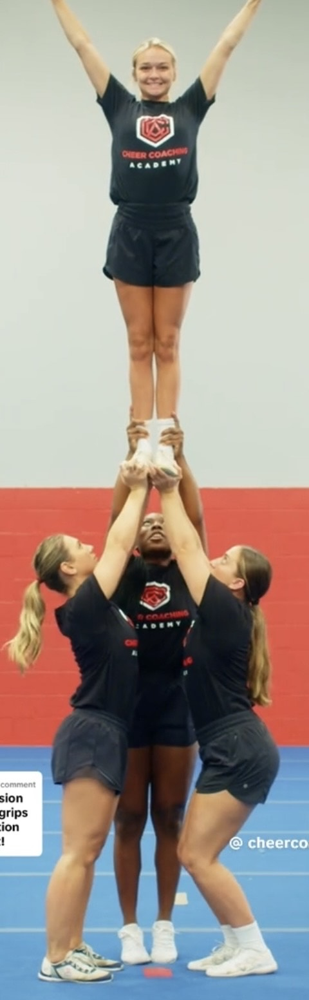
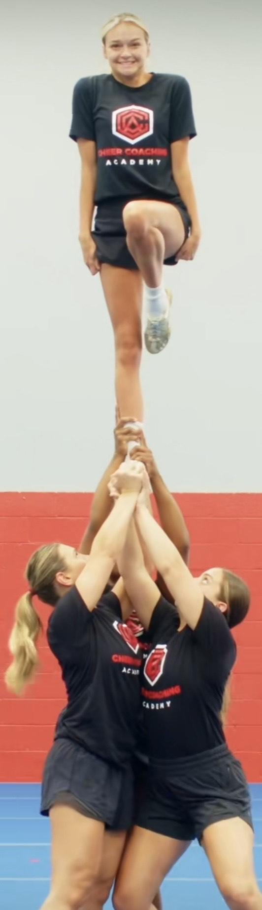

Extended Stunts
Exteneded stunts are skills that are performed above eye level.

Entended double Leg
- Top Girl, stand up straight out of your load keeping hips aligned and under shoulders.
- Bases, out of load plant your feet and use your legs to dip and drive above your heads fully extending your arms,
making sure to rotate wrist while keeping great coverage of foot.
- Backspot, from load keep top girls ankles together, dipping with your legs and driving that
to girl through the top making sure to stay in the stunt and not watch from the outside.

Extended Single Leg
- Top Girl, load will start with right foot in the load the other foot is touching the floor. Be sure to be up on your toe,
place hands onto the bases shoulders.
- Standing up quickly on top of your right leg, connecting left foot to right knee while squeezing core.
- Bases, out of load plant your feet and use your legs to dip and drive above your heads fully extending your arms,
making sure to stay close to your other base to ensure a solid foundation under the stunt.
- Main base keep regular grips, secondary base place right hand on the bottom center of foot between main bases hands. the left hand will remain on the top girls shin and go under the shoe hen reaches extended position.
- Backspot, will be in a squated position, right hand on the ankle and left hand under the top girls bottom/thigh area. Push the flyers bottom up first and allow left hand to joing th eright on the ankle squeezing and lifting up through an extended position.